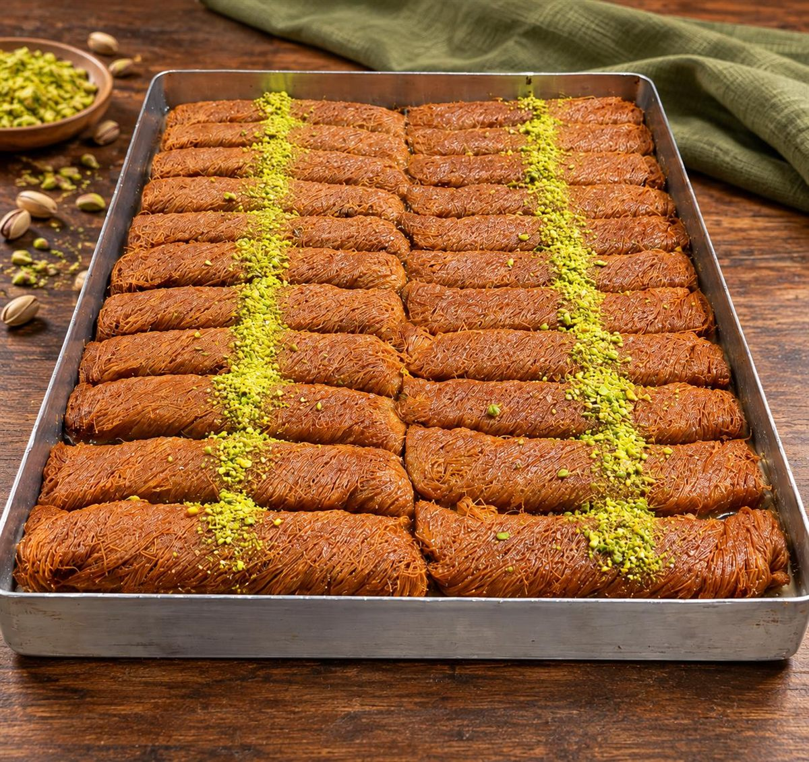
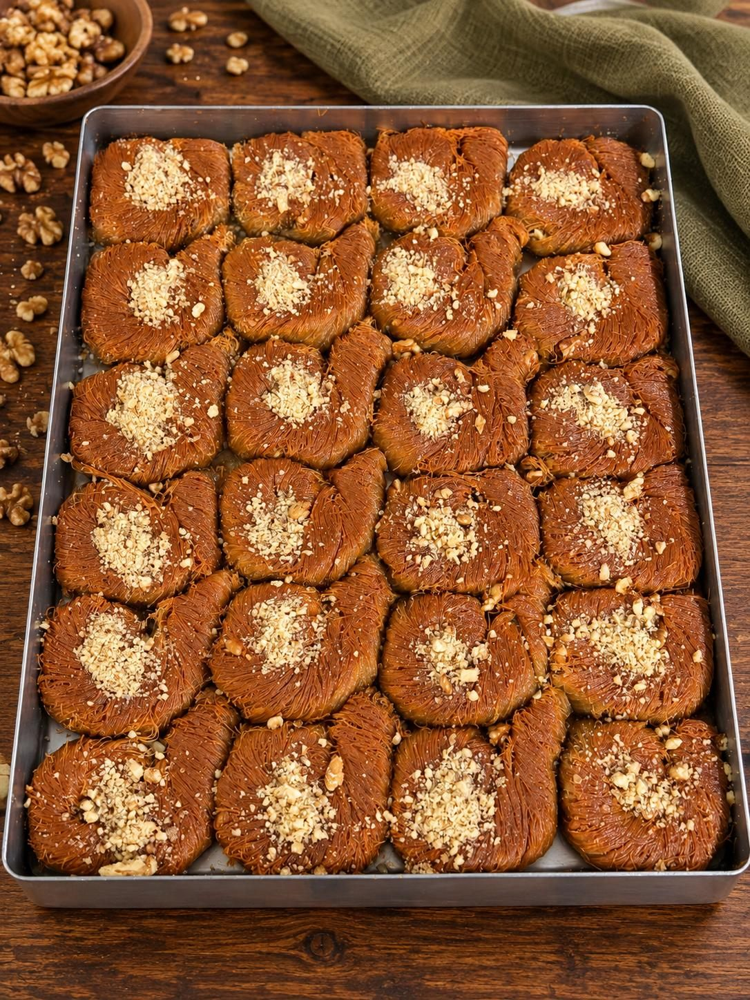

Fıstıklı burma kadayıf, usta elinden.
İncecik kadayıf telleri, altın renginde çıtır bir görünüm ve fıstığın kendine özgü lezzeti… Alas Burma Kadayıf, sofralarda paylaşmaya değer anlara eşlik etsin diye.



Burma kadayıf: göz alıcı sunum, unutulmaz tat.
Özel bir ikramdan kalabalık aile sofralarına kadar, burma kadayıfın davetkâr görünümü ve kat kat dokusu her sunuma ayrı bir güzellik katar.
Burma Kadayıf
İncecik sarılmış kadayıf telleri ve fıstıklı iç dokusuyla göze de damağa da hitap eden bir klasik. Kahve yanında, misafir sofralarında ya da kendine ayırdığın tatlı bir molada…
- Doku
- Çıtır katmanlar
- İç
- Antep fıstıklı
- Sunum
- Özenli, paylaşmaya uygun
Lezzetin sırrı, özenle yapılan her detayda.
Alas Burma Kadayıf’ta odağımız tek bir lezzet: burma kadayıf. İnce kadayıf tellerini, fıstıklı iç dokusunu ve altın rengindeki sunumunu öne çıkarıyoruz. Aile ziyaretinde, misafir sofrasında ya da özel bir günde; sevilen bir tatlının güzel anlara eşlik etmesini istiyoruz.
Alas farkı: iyi lezzet, güzel hatıralar.
Özenli hazırlık
Kadayıfın görünümünden sofraya gelişine kadar sunumun her ayrıntısına dikkat ederiz.
Gelenekten ilham
Burma kadayıfın tanıdık lezzetini sade ve özenli bir sunumla buluştururuz.
Paylaşmaya değer
Kahve molasından aile buluşmasına, paylaşmak isteyeceğin sofralar için.
Burma kadayıfın seni bekliyor.
Özel günün, sofran veya ikramın için uygun ürün ve miktar seçeneklerini keşfet.
Alas Burma Kadayıf’ı özel yapan nedir?
İnce ince sarılan kadayıf telleri, altın rengindeki çıtır görünümü ve fıstıklı iç dokusuyla klasik bir tatlıya gösterişli bir sunum katar. Kahve yanında küçük bir ikramdan kalabalık sofraların tatlısına kadar paylaşmaya uygundur.
En iyi lezzet için nasıl servis etmeliyim?
En iyi sunum için ürünü servis zamanına yakın açmanı öneririz. Ürünün teslimi sırasında verilen servis önerilerini dikkate al; uzun süre açıkta bırakmak dokusunu etkileyebilir.
Kalan kadayıfı nasıl muhafaza etmeliyim?
Paket üzerinde veya teslim sırasında paylaşılan saklama önerilerini esas al. Ürünü doğrudan güneş alan bir yerde bırakma; uygun saklama koşulları ürünün durumuna göre değişebilir.
Özel günler ve kalabalık sofralar için sipariş verebilir miyim?
Bayram, davet ve aile buluşmaları için düşündüğün tarihi ve yaklaşık miktarı önceden belirt. Böylece hazırlık planını ve uygun teslim zamanını sipariş öncesinde netleştirebiliriz.
Tepsi seçenekleri ve fiyatlar nasıl belirleniyor?
İhtiyacına göre miktar ve tepsi seçeneğini netleştirebiliriz. Fiyat ve mevcut seçenekler zaman içinde değişebileceği için siparişini kesinleştirmeden önce güncel bilgiyi teyit etmeni öneririz.
Teslimat veya dükkândan teslim seçenekleri neler?
Seçenekler adresine ve sipariş gününe göre değişebilir. Sipariş oluşturmadan önce uygun teslim yöntemini ve tahmini zamanı teyit ederek kendine en uygun seçeneği belirleyebilirsin.
Siparişimi nasıl oluşturabilirim?
Ürün sayfasından kadayıfı inceleyebilir, iletişim bölümündeki telefon veya mesaj seçenekleriyle sipariş ayrıntılarını paylaşabilirsin. Miktar ve istediğin tarihi belirtmen, planlamayı kolaylaştırır.
Tatlı bir merhaba demeye bekleriz.
Bir sipariş, özel bir gün ya da yalnızca güzel bir tatlı hakkında konuşmak için bize ulaş. Sana yardımcı olmaktan mutluluk duyarız.
+90 552 852 97 29